Built in · on by default
Riders Crosswake rules
Our own take on the game's racing. Same tracks, characters and gear; the limits are what change. Want the original rules? Turn it off any time in Settings › Gameplay › Riders Crosswake.
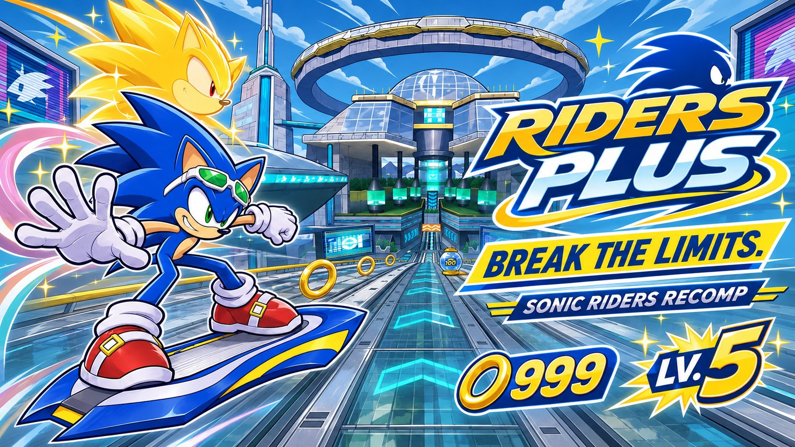
Original vs Riders Crosswake
| Original game | Riders Crosswake | |
|---|---|---|
| Ring limit | 100 | 999 (a hit or a fall still costs 100) |
| Gear levels | Lv. 1–3 | Lv. 4 at 200 rings, Lv. 5 at 300 |
| Gold 100-ring capsule | Gone once taken | Comes back after 25 seconds |
| Dash panels | Set you to the panel's speed | The panel's speed, or your speed + 25 km/h |
| Speed Shoes | Set you to 200 km/h | Your speed + 80 km/h (at least 200) |
| Charging a jump | Slows you down at once | Keeps your speed for 0.75 s |
| Drift dash | Caps you at about 250 km/h | Adds to your speed |
| Boost | A fixed burst | Tap for the classic boost, hold it for as long as you have air |
| Automatic Trails | Spin the stick yourself | Auto spin, 7 turns a second |
Hold to boost
The biggest Riders Crosswake update yet: every racer can hold their boost like nitrous, the Automatic Trails spin for you, and several players can pick the same character.
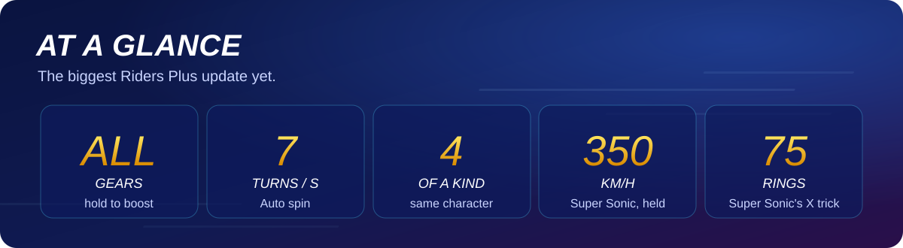
Hold to boost, for everyone
Tap B (or X) for the classic boost, exactly as before. Keep it held and the boost keeps going, using air at your gear's own boost rate, until you let go or run out of air. A turn or a bump no longer leaves you crawling back up to speed while you hold. Every character, every gear, in single player, split screen and online (the host's setting is used).
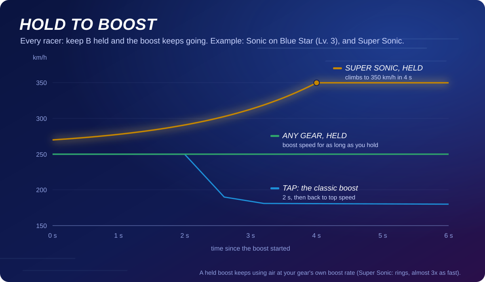
Auto spin in the Automatic Trails
In the stretches where the game takes over and asks you to rotate the Control Stick as fast as you can, Riders Crosswake now spins it for you at 7 turns a second. Speed and air climb just like a perfect hand spin, and your sticks survive. Only your own racers, never the CPUs. Thanks to Kiri235 for the idea (#23).
Same character for several players
Pick whoever you like, even if someone already took them. Two Knuckles? Four Super Sonics? It works everywhere you choose characters, with Riders Crosswake on or off.
Lv. 4 and Lv. 5
Collect 200 rings for Lv. 4 and 300 for Lv. 5. You get the game's own LEVEL UP!! (sparkle, sound and a full air tank), and the HUD shows "Lv. 4" or "Lv. 5" in the game's own digits, in split-screen too.
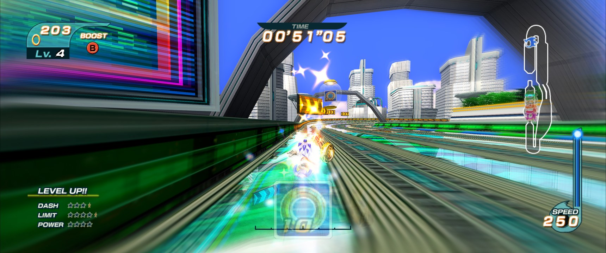
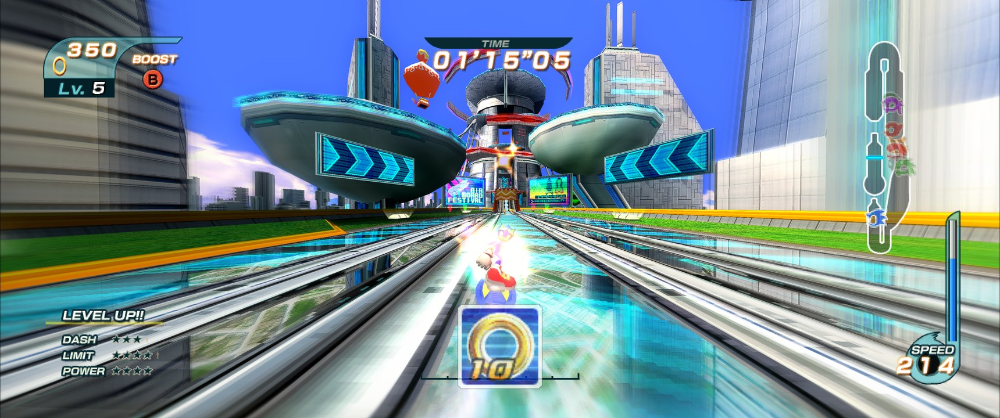
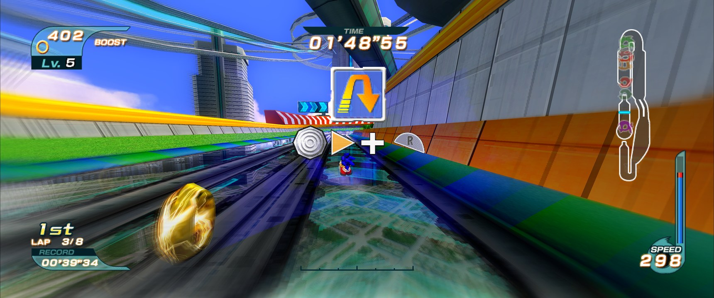
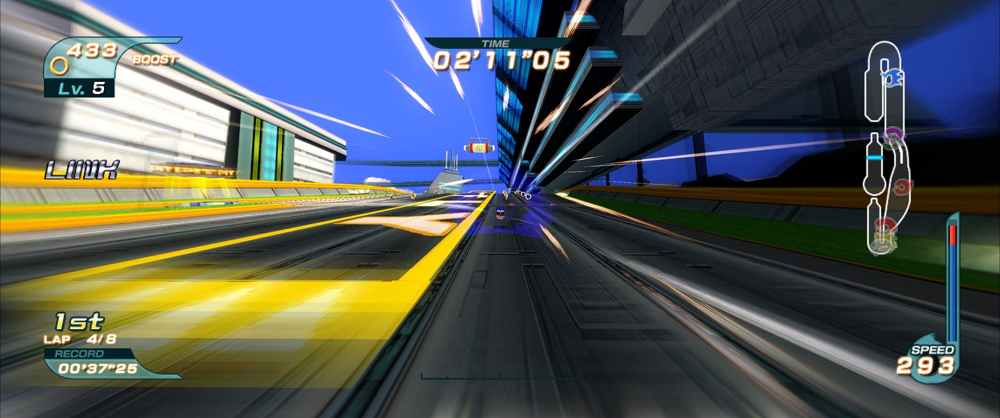
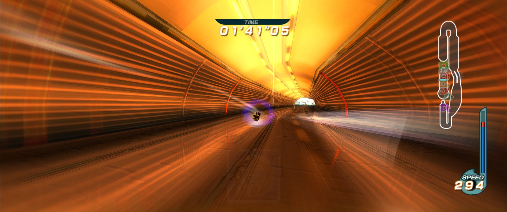
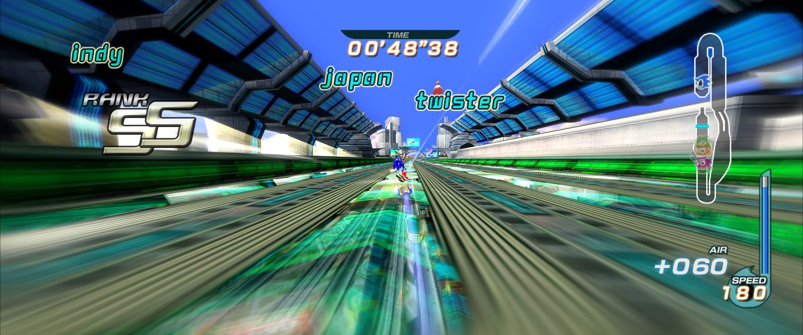
All shots: a real race on PC at 21:9.
Every gear keeps its character
Each gear keeps its own Lv. 1–3 stats and builds on its Lv. 3 numbers. Sonic's Blue Star goes from 180 / 250 km/h (top speed / boost) at Lv. 3 to 200 / 275 at Lv. 4 and 215 / 300 at Lv. 5.
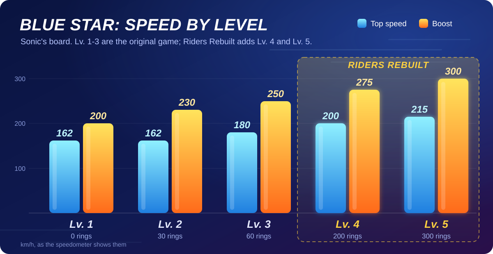
Charge without stalling
Holding A to charge a jump used to brake you at once. Riders Crosswake keeps your speed for the first 0.75 seconds.
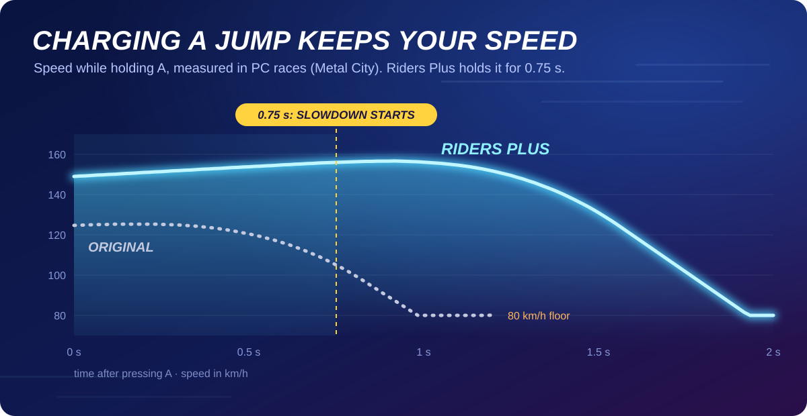
Super Sonic, supercharged
New in v0.8.7. Super Sonic now uses the 999-ring limit and Lv. 4 / Lv. 5 too, while keeping his own transformation, level and ring costs. His speeds rise with each level:
| Super Sonic | Top speed | Boost | Drift |
|---|---|---|---|
| Base | 195 | 270 | 110 |
| Lv. 4 | 220 | 300 | 125 |
| Lv. 5 | 240 | 330 | 140 |
km/h. Stat mods still work and are not applied twice. Other characters, and Super Sonic with Riders Crosswake off, keep their usual stats.
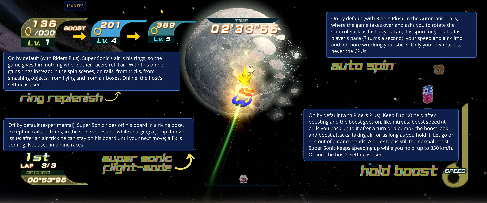
New in v0.9.0
- Held boost climbs to 350 km/h after 4 seconds, and the camera opens up to sell the speed. It burns his rings almost three times as fast as a tap, so pick your moments.
- An invisible ring magnet pulls nearby rings in, like a permanent Magnetic Barrier.
- Ring Replenish: his air is his rings, so everything that refills air now gives him rings, Automatic Trails included (75 rings for an X-rank trick).
- Flight (experimental, off by default): turn on Super Sonic flight and he races in a flying pose instead of standing on his board. After an air trick he can stay on his board until your next move; a fix is on the way.
Where his rings come from
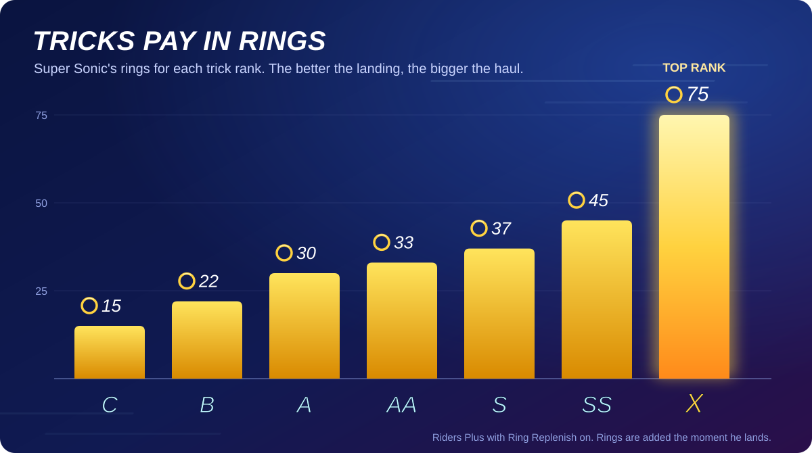
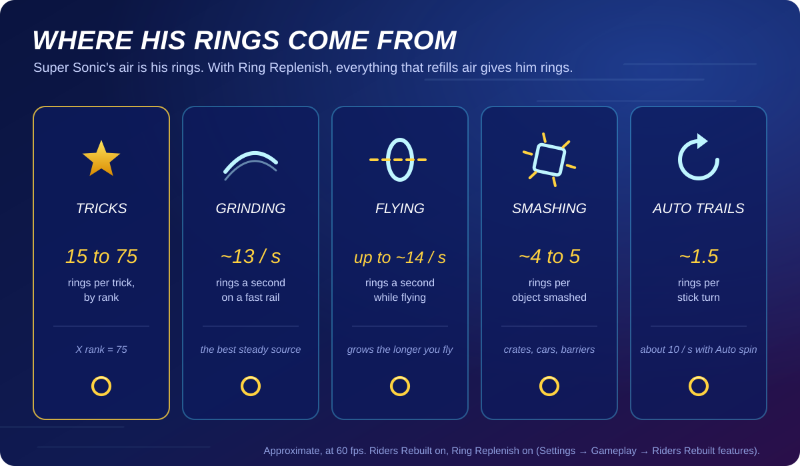
Switch each one on or off
Riders Crosswake features
Settings › Gameplay › Riders Crosswake features (only with Riders Crosswake on): Auto spin, Hold to boost and Ring Replenish are on by default; Super Sonic flight is experimental and off by default.
Cheats tab
No ring decrease (Super Sonic) keeps his rings from ever going down. Off by default, and cheats never apply online.
Prefer the original game?
Open the settings menu (hold − on Switch, F1 on PC, the top-left button on Android), then Gameplay › Riders Crosswake.